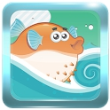

《领域驱动设计》

总体观点
2003 年，埃里克·埃文斯针对老大难问题：很多企业软件死掉不是技术不行，是业务太复杂——规则盘根错节、需求天天变，代码最后变成谁也看不懂的粥。
核心论点：软件真正的复杂性不在技术，在业务本身；对抗它的唯一武器，是真实反映业务的“领域模型”。模型不能只活在文档里，必须活在代码里、活在团队每天的对话里。战略上划分业务边界（限界上下文），战术上建模（实体、值对象、聚合），团队和业务专家用同一种语言说话（通用语言）。
它预言了未来：十几年后微服务大火，“服务按什么边界拆”最难的问题，答案早在这本书里——按限界上下文拆。今天的中台、微服务、业务架构，骨子里都是 DDD。难啃，但啃下来看业务系统的眼光完全不一样。
核心观点
-
1. 通用语言：全团队说同一种话
业务专家和程序员必须用同一套词汇说话，且这套词汇原样出现在代码里（类名方法名就是业务词汇）。很多项目的病根是“翻译腔”：业务说“客户”，开发写 user，测试叫“用户”——三个人开会各说各的，代码和业务对不上。
一家人装修：你说“玄关”，工头听成“门口那块”，设计师画成“门厅”，鞋柜尺寸全错。统一叫“玄关”指进门 1.5 米区域，图纸合同聊天都这么叫，就不会错。 -
2. 限界上下文：同一个词，出了这个门意思就变了
任何业务概念只在明确边界内清晰无歧义，出了边界意思就变。“商品”在销售那指“可卖的东西”，在仓储那指“占库位的货”。硬搞“统一商品”模型包打天下，最后一定四不像。承认一词多义，给每个含义划地盘。
“苹果”在水果店指能吃的水果，在手机店指电子产品。你不会要求全世界只用一个意思，业务系统也一样，各自有定义，再谈怎么协作。 -
3. 实体 vs 值对象：看身份，还是看内容
实体看“身份”：两个人同名同姓也是两个人，靠身份证号区分。值对象看“内容”：两张 100 元钞票编号不同但没人关心。值对象做成不可变（改就是换新的），天然线程安全，代码一下清爽很多。
订单是实体：订单号 2024001 和 2024002 是两个订单，哪怕内容一样。订单里的“收货地址”是值对象：改地址直接换新的，不用追踪“这个地址对象”的身份。 -
4. 聚合：一次只改一簇，守住一致性边界
一组互相咬合的业务对象，必须作为整体来改，对外只通过“聚合根”说话。银行转账：扣款和入账要么一起成功要么都不，绝不允许只扣不入。聚合就是业务一致性的“保险丝盒”。
订单和订单明细删订单必须连明细一起删。把“转出账户、转入账户、转账记录”圈成聚合，对外只暴露“转账”一个入口，里面怎么折腾都行。 -
5. 模型就是代码，代码就是模型
领域模型不能是 PPT 里的方框图，必须直接长在代码里：类名就是业务概念，方法就是业务动作，代码读起来像讲业务故事。模型和代码是两张皮，时间一长各说各话，模型就死了。
菜谱写“宫保鸡丁”，端上来也得是宫保鸡丁，不能端盘“不明炒物”说“反正能吃”。代码里有 Order 类带 pay()、cancel() 方法，读代码就知道“这是订单，能付款能取消”。 -
6. 防腐层：别让烂代码污染你的模型
干净模型必须跟老旧混乱的外部系统对接时，中间加一层翻译，脏东西只脏在这一层，不许渗进模型。没有防腐层，外部系统的怪概念怪字段会慢慢污染代码，最后你的模型也一样烂。
家里装净水器：自来水管可能有杂质，但你喝的水必须干净。净水器装在入户处，脏水只脏到滤芯，绝不进水杯。跟第三方支付、老 ERP 对接时，这一层能救命。 -
7. 把最好的力气，花在核心域上
业务里不是所有部分都一样重要。核心域（决定竞争力的部分）值得最好的设计师和最多的时间；支撑域和通用域能买就买、能凑合就凑合。在“员工请假审批”上雕花、核心“交易撮合引擎”写得稀烂，是本末倒置。
开餐厅：招牌菜值得请大厨反复打磨；收银系统直接买现成的；考勤用 Excel 就行。把三个月花在自研考勤上，招牌菜让学徒随便炒，这餐厅必倒。
全书结构
-
第1章 消化知识
业务专家与开发人员紧密协作，提炼核心业务规则，持续过滤无关细节，将深层业务认知沉淀为领域模型。
-
第2章 交流与语言的使用
团队必须建立统一语言（Ubiquitous Language），在日常沟通、需求文档与代码实现中使用完全一致的领域术语。
-
第3章 绑定模型和实现
模型驱动设计（MDD），让代码直接反映领域模型，杜绝业务模型在分析与实现之间断层脱节。
-
第4章 分离领域
采用分层架构隔离用户界面、应用层、领域层与基础设施层，确保核心领域逻辑不受技术框架与数据库细节污染。
-
第5章 软件中所表示的模型
明确区分实体（拥有唯一生命周期标识）、值对象（仅看重属性且不可变）、领域服务与聚合模块。
-
第6章 领域对象的生命周期
聚合（Aggregate）划定事务强一致性边界，工厂（Factory）负责复杂聚合创建，仓储（Repository）提供持久化透明访问。
-
第7章 使用语言：一个扩展的示例
以跨国货物运输系统为例，完整演示从梳理统一语言、分离实体与值对象、划定聚合边界到代码落地的全景实践。
-
第8章 突破
重构不仅是修补坏味道，当现有模型无法顺畅承载新业务诉求时，通过思维跃迁发现更深层次的本质业务模型。
-
第9章 将隐式概念转变为显式概念
倾听业务人员口头讨论中隐藏的约束与概念，将隐式业务规则提取为独立的规约（Specification）或领域事件对象。
-
第10章 柔性设计
采用意图清晰的接口、无副作用函数（Side-Effect-Free Functions）和前置断言构建易于组合测试的柔性模型。
-
第11章 应用分析模式
借鉴 Martin Fowler 等专家在财务、组织或记账等领域沉淀的高成熟度分析模式，加速复杂领域建模。
-
第12章 将设计模式应用于模型
运用策略模式（Strategy）与组合模式（Composite）等经典设计模式，让领域模型能够灵活适配复杂多变的分支规则。
-
第13章 通过重构得到更深层的理解
领域建模是一个持续探索与迭代的科学过程，抓住每次设计摩擦与危机将其转化为模型深化升级的突破契机。
-
第14章 保持模型的完整性
战略设计的核心：划分限界上下文（Bounded Context），绘制上下文映射图（Context Map），建立防腐层（ACL）隔离外部腐蚀。
-
第15章 精炼
界定核心域（Core Domain），清晰剥离通用子域（Generic Subdomain）与支撑子域，把团队最顶尖的资源倾斜在核心竞争力上。
-
第16章 大型结构
在超大型复杂系统中确立演化式秩序（Evolving Order）、系统隐喻或职责分层，保持全局架构宏观协调与清晰边界。
-
第17章 领域驱动设计的综合运用
战略设计把方向，战术设计打基础；根据业务生命周期动态平衡架构严谨度与交付速度，实现战略与代码的统一。